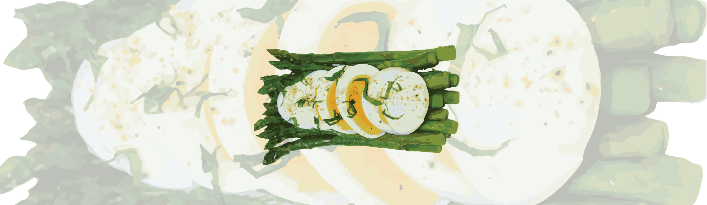

Steamed Asparagus with Chopped Egg

Ingredients
- 1 bunch asparagus, tough ends trimmed
- 2 organic eggs from pastured hens
- 3 tablespoons chopped fresh tarragon
- 1 tablespoon fresh lemon juice
- 2 tablespoons extra-virgin olive oil
- 1/2 teaspoon sea salt
Instructions
- Pour filtered water to a depth of 3 inches (7.5 cm) into the base of a steamer and bring to a boil. Arrange the asparagus on the steamer rack, cover, and steam until tender but crunchy, 4-6 minutes.
- Meanwhile, put the eggs in a saucepan, add filtered water to cover, and place over high heat. As soon as the water reaches a brisk simmer, turn off the heat. Let the eggs stand in the water for 4 1/2 minutes. The eggs should be soft boiled. Immediately remove the pan from the heat and place under cold running water until the eggs are cool enough to handle. Peel the eggs and chop them.
- In a bowl, combine the warm asparagus, tarragon, lemon juice, oil, and salt and toss to mix well. Transfer to a platter and top with the chopped eggs.
Decadent Garlic Shrimp with Spinach and Pasta
Ingredients
- organic angel hair pasta
- chopped fresh organic basil
- peeled and thawed raw shrimp
- organic diced tomatoes
- organic heavy cream
- crushed organic red pepper
Instructions
- Cook pasta according to directions, drain, rinse under cool water and set aside. Heat olive oil in large skillet on medium heat. Once hot, add garlic, basil, oregano, and onions and fry for about 8 minutes until onions begin to turn translucent. If garlic or onions begin to brown, lower heat.
- Add the tomatoes along with their juice to the skillet mixture. Bring to a simmer and cook for 10 minutes longer. Add spinach, shrimp, butter, cream, cayenne pepper, Parmesan, mozzarella, and wine. Simmer for 8 more minutes until the spinach is wilted and the shrimp has turned pink.
- Add the pasta to the skillet and toss to coat. Season with salt, black pepper and crushed red pepper to taste and serve immediately.
Sesame Fried Rice
Ingredients
- 3 cups cooked organic rice (white or brown)
- sesame seeds
- 3-4 tablespoons sesame oil
- 4 eggs
- 1 garlic clove finely minced
- 2 tablespoons soy sauce
Instructions
- Prepare egg mixture first by beating eggs, soy sauce and sesame oil together in a small bowl.
- Heat sesame oil in pan on medium-high and add cooked rice. Fry rice until somewhat translucent or at least until hot. Sprinkle salt to taste.
- Turn heat to low and add egg mixture to rice. Stir to coat all rice and continue to stir constantly until all egg is cooked. Once cooked, add sesame seeds and other garnishes if using. Serve.